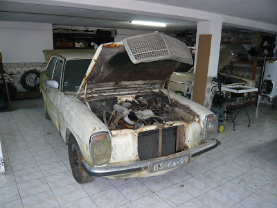
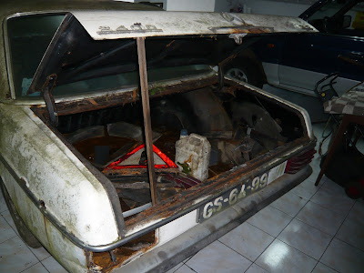
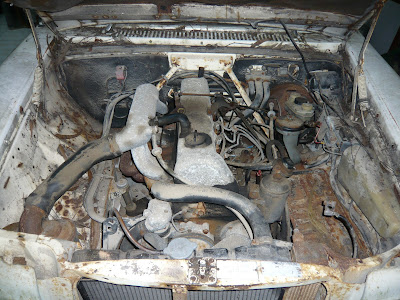

Restauro 240D 3.0 (1976)
O novo projeto começa aqui: um 240D 3.0 de 1976, desafiante, marcante e com potencial para se transformar numa recuperação tão especial quanto exigente.
Este novo Mercedes representa mais do que uma simples continuação: é um desafio diferente, com outra escala, outras exigências e uma nova oportunidade para recuperar uma peça importante da história da marca.
À primeira vista, é evidente que não será uma tarefa fácil. O estado do automóvel exige trabalho, paciência e capacidade para enfrentar problemas que surgem sempre num projeto desta idade. Mas é precisamente isso que também lhe dá valor.

O objetivo passa por recuperar o automóvel com o mesmo respeito pelos detalhes, tentando preservar aquilo que o torna especial e devolvendo-lhe a presença que sempre mereceu.

Para além da estética e da carroçaria, há também uma componente mecânica muito relevante. Este modelo distingue-se pelo seu carácter próprio e pelo motor que o torna especialmente interessante dentro da família W115.

O 240D 3.0 ocupa um lugar especial na história da Mercedes-Benz por ter sido o primeiro automóvel de passageiros com motor diesel de cinco cilindros. Isso faz dele não só um clássico interessante, mas também uma peça com relevância técnica e histórica.
Este será, por isso, um projeto para acompanhar com atenção — tanto pela dificuldade como pela singularidade do modelo.